云效议题的完整闭环
一条议题从进入到回写，以及在任务中途生成新议题 / 新待办的全过程。
0一张图看全流程
一条云效议题有两条进入方式，运行中还有两条生成方式，最后统一收口到回写。
- 议题内容即 spec
- 直接跑执行任务，无方案文档
- 先出
plan.md方案 - 定稿后在预览里「开始」（立即跑）或「生成待办」（先不跑）
- 方案定稿后按议题拆出执行任务
- 一议题一任务，按
deps.json拓扑顺序
- 发现新问题 → 立项
- 创建云效新议题 + 自动绑定新待办
- 「回写云效」评论（开发向 + 测试向）+ 价值评分
- 提交带
#议题编号，云效自动关联代码
1两个入口长什么样
进入「云效议题」视图（欢迎页左侧云朵图标），每一行议题右侧都是这一组按钮。
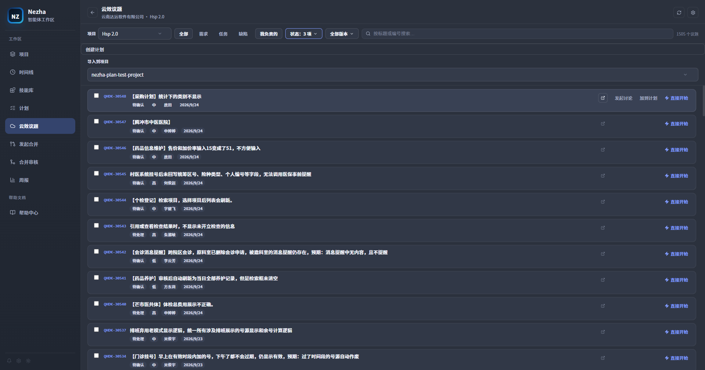
- 直接开始——跳过讨论，直接执行该议题。
- 发起讨论——进入方案讨论链路，N=1 的单条快捷入口，和「多选后底部统一发起」是同一条链路。
2「发起讨论」：先出方案，再执行
2.1 对话框
点「发起讨论」后弹出确认框：
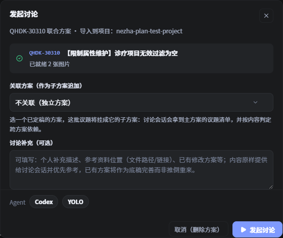
若本项目已有其它已定稿方案，对话框里会多出「关联方案（作为子方案追加）」下拉——选一个主方案后，这批议题会挂成它的子方案（见 第 9 节）；不选则是独立方案。
2.2 打开即建方案占位
「发起讨论」和「直接开始」最大的流程差异在这里：打开对话框的瞬间，Nezha 就已经为你创建了一个 draft「方案（Plan）」，并把议题详情、图片下载到方案目录 .nezha/plans/<planId>/ 下。
- 对话框里如果拉取失败，可以「重试」或「剔除」这一条；
- 直接关闭 / 点「取消（删除方案）」会把 draft 方案和已下载图片一起删掉，不留残留。
2.3 讨论产出什么
确认发起后，待办（或新建的任务）会变成一条方案讨论任务并立即启动。Agent 读取 yunxiao-plan-discussion 技能，按技能定义的流程走：
| 议题类别 | 讨论阶段做什么 |
|---|---|
| 需求（Req）/ 任务（Task） | 用 grilling 决策树把议题问清楚：一次只问一个问题、每个问题先给推荐答案、能查证的事实自己查；走完目标与边界、验收标准、关键取舍 |
| 缺陷（Bug） | 先用 diagnosing-bugs 定位根因（先搭一条能变红的命令，再复现、最小化、提假设，结论要有可复现证据），根因确认后才进入方案产出 |
两种类别在讨论阶段都先不写代码，产物是一份方案文档 plan.md，结构是固定契约：
## 统筹一节（跨议题的公共改动归属、依赖与执行顺序；单议题也要有）；- 每个议题一个
## <议题编号> <标题>节，节内三个小节按固定顺序：### 修改方案汇总（开发向）→### 性能影响分析→### 影响范围与测试（测试向）； - 「性能影响分析」每议题必填：命中热路径要给出代码/调用链依据，判定「可忽略」也要写明理由。
2.4 方案定稿 → 生成待办 / 一键启动
讨论任务结束时（手工「标记已完成」或会话自然退出），方案从 draft 转为 finalized（定稿）。此时从任务头部的「方案」按钮打开方案预览，右上角有两个通往执行链路的按钮：
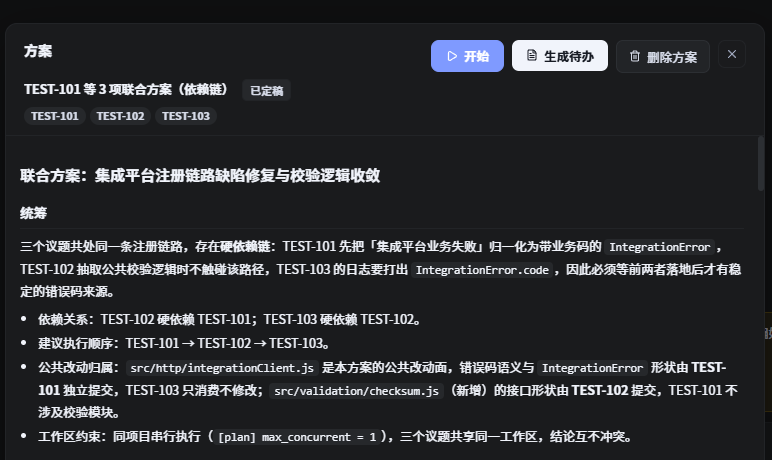
- 开始——生成待办并立即按依赖顺序跑起来。它不弹确认页，直接用方案自带的议题顺序与
deps.json、以及该项目上次选择的 Agent / 权限；生成的任务先进入waiting_deps，交给依赖门禁按拓扑顺序逐个放行（默认一次一个）。详见第 9 节。 - 生成待办——只生成任务，落成
todo、不启动，由人工把关后逐个开跑。适合还想先看看方案拆解得对不对的场景。
点「生成待办」进入「从方案生成待办」确认页：
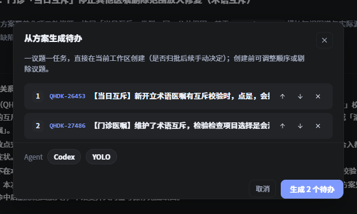
这一页可以：
- 调整执行顺序：每条议题右侧的上/下箭头；
- 剔除议题：右侧 ×，剔除的议题不生成任务；
- 冲突议题自动排除：若某议题已被单独导入过，会标注「已被单独导入，自动跳过」，不重复生成；
- 选择 Agent / 权限模式（按项目记忆）。
点「生成 N 个待办」后：
- 每个议题生成一条任务——一议题一任务，直接在当前工作区创建（不建 worktree）；
- 方案状态转为
executing，记住本次确认的议题与顺序； - 任务落到项目「待办」列：走「开始」时它们先停在
waiting_deps，由门禁自动放行；走「生成待办」时停在todo，由人工把关后再启动； - 任务提示词内联了「方案统筹」+「本议题方案」，并要求只改本议题相关改动、提交信息带
#议题编号。
2.5 多议题联合分析
勾选多条议题后从底部发起，走同一条链路，但会做跨议题统筹：一份 plan.md 覆盖全部议题，统一排序、识别公共改动归属。单次讨论有软上限（10 条，源于上下文与图片量的现实约束），超出会提示。
3「直接开始」：议题即 spec
3.1 确认对话框（三种形态）
点「直接开始」不会立即建任务，而是先弹一个确认对话框。这个对话框是「零副作用」的——打开不建任务、不下图，取消什么都不留下。它会按议题类别呈现三种形态。
形态 A：需求 / 任务类，默认直接执行
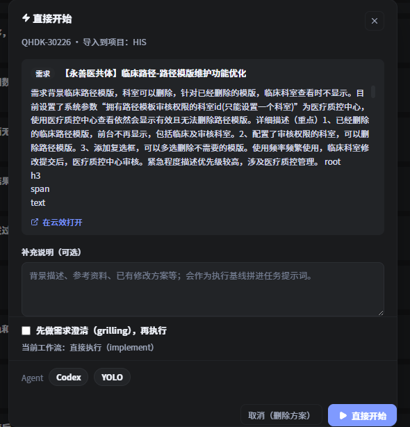
形态 B：需求 / 任务类，勾选「先做需求澄清」
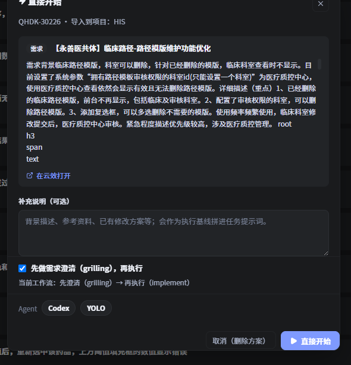
形态 C：缺陷类，锁定根因诊断
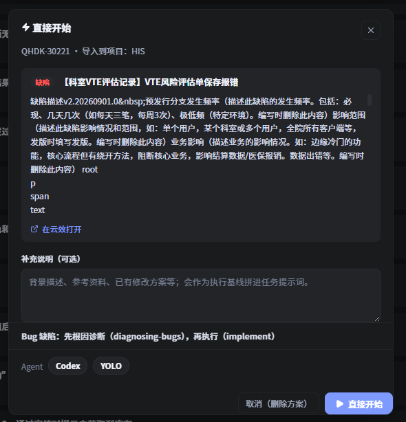
对话框里可做的事：
- 只读预览议题详情（拉取失败不阻断，会提示「描述以下方补充为准」）；
- 填「补充说明（可选）」：背景描述、参考资料路径/链接、已有修改方案等，会作为执行基线拼进任务提示词，优先于议题描述；
- 确认 Agent（Claude Code / Codex / DSH）与权限模式（询问 / 自动编辑 / YOLO），按项目记忆。
3.2 工作流如何路由
| 议题类别 | 勾选状态 | 实际工作流 |
|---|---|---|
| 缺陷（Bug） | 复选框不出现 | 先 diagnosing-bugs 定位根因（要有可复现证据）→ 再 implement |
| 需求 / 任务 | 不勾（默认） | 直接 implement，议题描述即 spec |
| 需求 / 任务 | 勾选「先做需求澄清」 | 先 grilling 一次一问澄清需求 → 达成共识后立即 implement |
diagnosing-bugs。因为 Bug 的取证循环本身就会盘问，再叠加一轮需求澄清会变成两个技能各问一遍、互相打架。
3.3 确认后发生什么
- 在目标项目里创建一条
pending任务，切到项目视图； - 后台拉取议题详情 + 下载图片到任务附件目录
.nezha/attachments/<taskId>/； - 拼装提示词（议题信息 + 描述 + 图片 + 你的补充 + 协作约束）后自动启动 Agent，在当前工作区运行（不建 worktree）。
失败处理与「发起讨论」一致，但两种入口的落点不同：
- 从议题列表发起：任务已创建，若详情拉取失败或图片全部失败 → 任务置
failed并带原因、不启动；图片部分失败 → 警告放行。重试方式是删掉任务重新发起。 - 从云效待办发起：待办原地保持
todo不动，只弹错误提示、可直接重试，不会留下失败任务。
plan.md，议题内容就是唯一 spec。它同样要求提交带 #议题编号、同样支持回写云效；工作产物（含价值评分、影响范围与测试）写到 .nezha/drafts/<taskId>/discussion.md。
4云效绑定待办里的双入口
如果议题已经被导入成项目里的待办任务（「待办」列里的云效议题卡片），点开它会进入云效议题待办视图，这里同样有「发起讨论」和「直接开始」两个按钮：
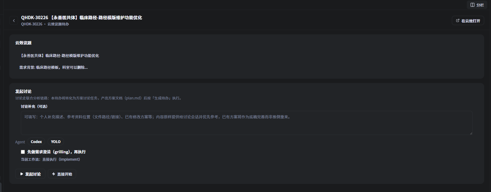
和议题列表的区别：
- 待办视图里的「发起讨论」是待办自身转化为方案讨论任务，不会新建任务；
- 「直接开始」也是待办原地转为执行任务；
- 「先做需求澄清」复选框内联在这里；议题详情加载完之前它是禁用状态，若详情确认是 Bug，会换成锁定的根因诊断提示。
5任务运行中生成议题：补录议题
前面讲的都是给定议题怎么开工。但真实开发里经常反过来：任务跑到一半，讨论/执行中发现了一个新问题，需要单独立项。 这时候用「补录议题」。
5.1 它是什么
补录议题是一条反向闭环：不打断当前会话，把一个新发现的问题补录成正式云效议题，并自动生成一条绑定该议题的本地待办，来源可溯。它由 yunxiao-backfill-issue 技能驱动，需已安装到项目：
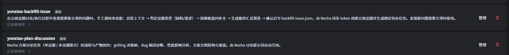
yunxiao-backfill-issue 与 yunxiao-plan-discussion5.2 怎么用（Skill 侧）
在当前任务的会话里手工调用该技能（例如 /yunxiao-backfill-issue）。Agent 会：
- 总结上下文：从当前会话把「未立项的新问题」拎出来，归纳成自包含描述（不编造会话里没有的事实）；
- 判定类型：先问「这是一个缺陷还是需求？」，不默认；
- 读模板：按类型打开
templates/bug.json或req.json； - 逐项盘问：按模板内容段一次问一段，并给出引导语（缺陷：缺陷描述/发生频率/影响范围/业务影响；需求：需求背景/详细描述/使用频率/紧急程度描述）；
- 拟标题：从上下文拟一个，交你确认（可改）；
- 最终预览：把「标题 + 各内容段 + 自动回填的基础字段」一次性展示，要求「确认创建 / 修改」；确认前不写任何文件；
- 落请求：你确认后，把结构化请求写进
.nezha/drafts/<taskId>/backfill-issue.json。
基础字段不逐项盘问，按规则自动回填：
| 字段 | 取值 |
|---|---|
| 负责人 | 云效令牌当前用户 |
| 优先级 | Agent 判断（复用 issue-value-scoring 的优先指数/核心指数定档） |
| 严重程度 | Agent 判断（Bug 走 value-scoring 的严重程度维度）或模板默认 |
| 来源 | 默认「内部反馈」 |
| 归属项目 | 取当前议题所在云效项目 |
| 所属产品 | 必填且由你选择（Agent 先据上下文给候选） |
5.3 怎么用（Nezha 侧）
技能只负责把请求写进草稿文件，建议题和建待办由 Nezha 完成：
- 云效任务运行期间，Nezha 每约 4 秒扫描一次活跃任务的草稿目录；
- 检出
backfill-issue.json后，用自己持有的令牌调云效CreateWorkitem创建新议题 Y（Agent 进程始终不持有令牌，也不直接调云效 API）； - 自动生成一条绑定 Y 的
todo待办，记录derivedFromTaskId/derivedFromWorkitemId溯源字段，云效描述里也带来源行； - 写消费标记、清掉草稿。
几个关键性质：
- 不自动启动：新议题落成待办，由人工把关后再走常规闭环；
- 幂等：同一来源 + 同一内容签名只建一次；若议题已建但本地待办缺失（中断/历史孤儿），会据标记里的 workitemId 补建，保证议题 ↔ 待办 1:1；
- 失败可重试：创建失败或网络错误时保留草稿，后续轮询自动重试；
- 人工闸在写文件之前：用户不确认，就不会产生议题。
6完整流程全景
把两条进入链路、两条生成链路与回写收口画在一起：
- 议题即 spec，零方案占位
- 打开即建 draft 方案（占位）
- 讨论任务：
grilling/diagnosing-bugs - 产出
plan.md（方案文档） - 讨论任务 done → 方案
finalised - 方案定稿 →「生成待办」或「开始」一键串行执行
- 任务 done
- 【回写云效】评论（开发向 + 测试向）+ 价值评分
- 提交带
#议题编号自动关联 - 议题闭环收口
- 【补录议题】立项
- Agent 盘问 → 写
backfill-issue.json - Nezha 用令牌建云效议题 Y
- 自动生成绑定 Y 的新待办（
todo） - 回到「待办」列，人工把关后重新进入闭环
两个容易混的「生成」动作，一句话区分：
| 动作 | 输入 | 输出 | 在哪触发 |
|---|---|---|---|
| 生成待办 | 已定稿的 plan.md | N 个执行 todo 任务（一议题一任务） | 方案预览 →「生成待办」 |
| 补录议题 | 运行中发现的新问题 | 云效新议题 + 绑定新 todo | 会话中手工调用技能 |
7到底怎么选
7.1 用「发起讨论」，当……
- 需求还不清楚：议题描述笼统、边界模糊，你希望 Agent 先把问题问明白、拿出方案再动手；
- 影响面大：涉及多个模块、多张表、前后端联动，值得先评审方案再改；
- 需要留痕：你要一份
plan.md作为「为什么这么改」的依据，供评审、复盘或回写云效引用； - 多议题：几条议题彼此关联，需要跨议题统筹、统一排序、识别公共改动；
- 要人工把关：你想在「方案 → 生成待办 → 执行」之间插一道人工确认。
7.2 用「直接开始」，当……
- 缺陷根因明确：能稳定复现、大致知道问题在哪，只差动手修；
- 小改动、一句话说得清：比如「列表按申请时间降序」「标题文案写错了」；
- 议题描述本身就是足够具体的 spec：不需要澄清、不需要方案评审；
- 想快速看到改动：不想走「讨论 → 定稿 → 生成待办」的多步流程。
7.3 关于「先做需求澄清」这个勾选项
它不是「第三条链路」，而是「直接开始」链路的前置澄清开关，适用于这个中间地带：方向已经清楚、但要动手还差点细节（验收标准、边界、关键取舍）。
勾上之后的澄清契约是：一次只问一个问题、只问需求层关键决策、达成共识就停；实现阶段不再重复盘问。澄清结论会写进 .nezha/drafts/<taskId>/discussion.md 的「修改方案汇总」段——这正是回写云效时讲清「为什么这么改」的依据。
| 你的处境 | 选择 |
|---|---|
| 需求我很清楚，细节也定了 | 直接开始（不勾澄清） |
| 需求大体清楚，但验收标准/边界想和 Agent 对齐一下 | 直接开始 + 勾「先做需求澄清」 |
| 需求本身就没想清楚，或影响面大要走方案评审 | 发起讨论 |
| 手里这条议题要拆成多个执行任务 | 发起讨论 → 生成待办 |
#议题编号 关联。
选择依据只看一件事：这次改动值不值得先出一份方案、需不需要人工在方案上把关。
8方案看板与生命周期
议题列表能看单条议题，执行任务能看单条任务，但你还需要回答第三个问题：这个项目里有哪些方案、各自走到哪一步了。这就是「方案看板」。
8.1 打开
Alt + K（Windows）/ ⌘ + K（macOS）打开看板浮层，切到「方案」标签页。任务看板与方案看板共用一个浮层，只用标签页切换，不会在项目栏新增第二个入口。
8.2 左栏方案列表
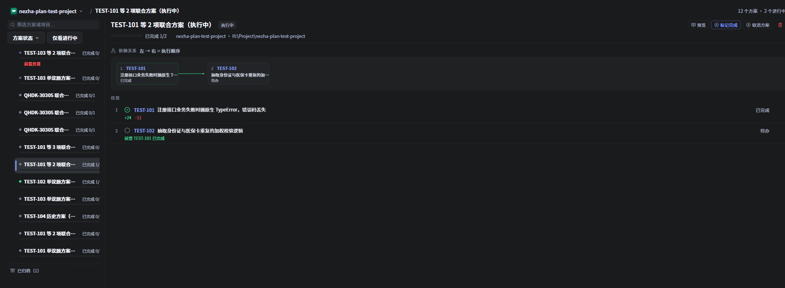
左栏按方案列出，每项显示完成进度（如 已完成 1/2）与状态标记；顶部可筛选：
- 方案状态：多选（讨论中 / 待办 / 执行中 / 已完成 / 已取消…）；
- 仅看进行中：只留还有任务在运行 / 等待 / 失败的方案；
- 清除筛选：一键恢复全量。
右栏是当前方案的详情：上方依赖关系图（左 → 右 = 执行顺序，箭头是硬依赖），下方按拓扑顺序排列的任务行，每行标注状态与前置完成情况。
8.3 生命周期：完成 / 重开 / 取消 / 归档 / 删除
方案详情右上角提供生命周期操作：
| 操作 | 语义 |
|---|---|
| 标记完成 | 由你决定方案算不算完成（可能还有验收或后续工作，任务状态表达不了）。仅「执行中」的方案可标记。 |
| 重新打开 | 已完成方案的逆操作，回到执行态继续干活。 |
| 取消方案 | 取消是保留状态，记录仍在看板上，不会被删掉。 |
| 归档 | 把已完成的方案移出主列，收进底部「已归档（N）」区；可随时反归档。归档是展示层标记，与状态正交。 |
| 删除 | 显式删除，会先二次确认；若仍有任务引用该方案，后端会拒绝。 |
completed 从没有任何代码去设置它，方案会永远停在「执行中」；而「取消」当时实际执行的是删除记录，所以既没有归档态也没有可回溯的取消态。现在两者都补齐了：完成由你确认，取消是留存态，归档只是移出视野。
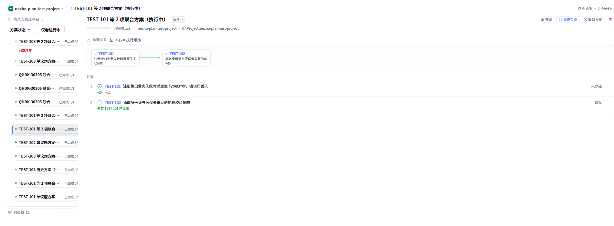
9依赖门禁与串行启动
方案讨论时会在 ## 统筹 里分析跨议题依赖，但那段结论起初只是 plan.md 里的散文——应用既读不到也校验不了，于是生成的待办会并行去改同一批文件。为解决这一点，方案目录里多了一份机器可读的 deps.json。
9.1 deps.json：依赖契约
讨论结束时，Agent 除 plan.md 外还写一份 deps.json（与 plan.md 同级，就在 .nezha/plans/<planId>/ 下），声明各议题之间谁必须在谁之前完成。Nezha 解析它并做拓扑排序，得到执行顺序。
解析刻意宽松：文件坏了只是「少一道护栏」，会给出告警并降级放行，不会把任务永久卡死；依赖成环时环上的边全部丢弃，门禁因此永不因环而死锁。指向方案外编号、自依赖等都会被丢弃并记录告警。
9.2 等待状态 waiting_deps
前置没全部完成的任务不会启动，而是停在 waiting_deps（「等待前置」）；前置完成后自动放行。等待中的任务不创建 PTY，所以它既不算活跃任务，也不占用启动恢复逻辑。
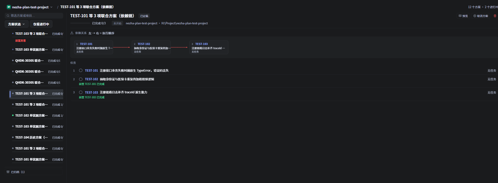
前置异常：不静默跳过
如果某个前置是失败 / 取消 / 中断 / 缺失，Nezha 不会悄悄把它当成「已完成」放行：依赖它的任务继续等待，并在看板上标红、只通知一次，把决定权交给你——可以「忽略依赖，仍然开始」。
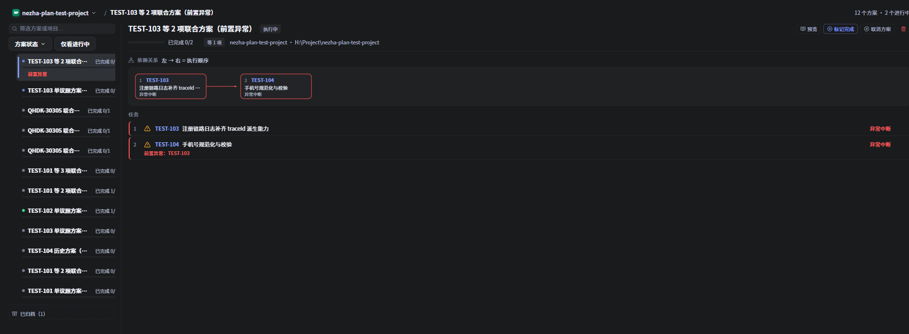
9.3 并发上限与串行
放行还受每项目并发上限约束，由项目配置 [plan] max_concurrent 控制，默认 1 = 串行。也就是说，走「开始」一键启动时，同一工作区里默认一次只跑一个方案任务——这正是依赖门禁想守住的东西：避免同一工作区里并发互相踩。
| 规则 | 行为 |
|---|---|
前置全部 done | 按拓扑顺序自动放行，受并发上限约束 |
| 前置异常（失败/取消/中断/缺失） | 保持等待、标红、通知一次；可人工「忽略依赖，仍然开始」 |
| 「忽略依赖」 | 只绕过前置判断，不绕过并发上限 |
| 手动点 ▶ 启动 | 同样受串行闸门约束（点第二个会被排队，而不是并发跑） |
10追加议题：挂成子方案
方案定稿并执行之后，常常又来了一批相关议题，想把它们接着挂到同一个主方案下。这就是「追加议题」——一次追加的一批议题合成一个子方案，挂在主方案下，有自己的 plan.md 与 deps.json。
10.1 入口
入口就在「发起讨论」对话框里（见 2.1），不另设一个议题选择器：那个视图本来就有多选、筛选、分页和「已占用议题」置灰，追加只是在那里多一个可选字段。
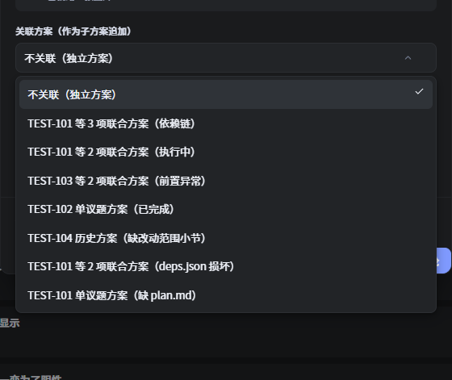
- 选一个已定稿的主方案 → 这批议题成为它的子方案；
- 保持「不关联（独立方案）」→ 与以前一样是独立方案；
- 候选只列本项目内、非讨论中 / 已取消 / 已归档的方案，并排除正在创建的方案自身。
10.2 关联之后
- 讨论拿到上游上下文：子方案的讨论会话会拿到主方案的议题清单与方案文档路径，由 Agent 按内容判定跨方案依赖（而不是让你手工填）。
- 看板上缩进显示：子方案在左栏缩进在父方案之下，不能独立筛选——筛选按子树语义生效，命中子方案时会连带其整条祖先链一起显示。
- 跨方案依赖渲染为外部节点：若子方案的某个前置属于别的方案，依赖图里会把它画成外部节点，否则该议题会落在第 0 层、声称自己无前置，而任务行又显示在等待，自相矛盾。
11批量盘问开关（实验性）
默认情况下，需求澄清与方案讨论走的是决策树逐问：一次只问一个问题，每个问题先给推荐答案。议题多、设计树宽的时候，这种走法每个分支都要一次往返。
开启「批量盘问」后，改成一轮抛出当前前沿的全部问题（每题附推荐答案），你回一次，Agent 再据回复重算前沿、问下一轮。同样的决策，把往返次数压下来。
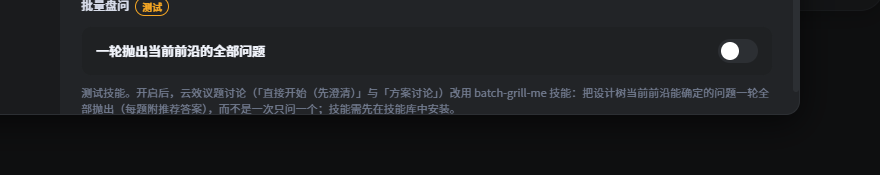
| 项目 | 说明 |
|---|---|
| 开关位置 | 应用设置 → 技能库（带「测试」徽标），为应用级设置 |
| 影响范围 | 只改提示词措辞：云效议题的「发起讨论」与「直接开始（先澄清）」会改走 batch-grill-me |
| 前置 | 需先在技能库安装 batch-grill-me 技能，否则开关不起作用 |
| Bug 议题 | 不受影响，保持一次一问的 diagnosing-bugs 根因取证循环 |
| 不改变 | plan.md 结构、性能影响分析分支、deps.json 契约都不变 |
batch-grill-me 技能已安装到项目。
12常见问题
| 现象 | 说明 / 处理 |
|---|---|
| 「直接开始」点下去没建任务 | 先弹的是确认对话框，要再点对话框里的「直接开始」才会建任务；打开/取消都不产生任务。 |
| 「发起讨论」打开后取消，会残留东西吗 | 不会。取消（或直接关闭）会删掉 draft 方案与已下载图片。 |
| Bug 议题想先澄清需求 | 不行，也不需要。Bug 恒走 diagnosing-bugs 根因取证，它自带盘问；澄清复选框对 Bug 不显示。 |
| 想批量「直接开始」多条议题 | 不支持。直接执行是一议题一任务；批量请用「发起讨论」的多选入口。 |
| 讨论跑完了，代码改了吗 | 通常没有。讨论产出的是 plan.md；要改代码需再点「生成待办」按方案拆出执行任务。 |
| 「生成待办」里的「取消」会删方案吗 | 不会，只关闭弹窗。会删方案的是「发起讨论」弹窗里的「取消（删除方案）」。 |
| 「生成待办」里某条显示「已被单独导入」 | 该议题本地已有绑定任务，自动跳过以免重复；如需重新生成，先删掉那条旧任务。 |
| 讨论结束后「生成待办」按钮灰着 | 方案还在「讨论中」，plan.md 仍在生成/更新；等讨论任务结束（finalised）后即可生成。 |
| 补录议题要不要先装技能 | 要。yunxiao-backfill-issue 需安装到当前项目（SkillHub → 管理 → 安装到项目）。 |
| 补录后云效议题建了、但没看到待办 | 正常应 1:1 生成；若遇中断，重新触发扫描会据标记补建。仍缺失时检查该议题是否已被本地任务绑定。 |
| 补录的议题会自动开始跑吗 | 不会。新议题落成 todo 待办，需人工把关后启动。 |
| 补录时能把令牌给 Agent 吗 | 不需要也不应该。Agent 只写 backfill-issue.json；建议题由持有令牌的 Nezha 完成。 |
| 待办视图里「先做需求澄清」是灰的 | 议题详情还在加载。等详情就绪后即可勾选；若该议题是 Bug，复选框会被替换为锁定的根因诊断提示。 |
| 图片没被 Agent 读到 | 图片在发起时下载到附件目录；任务重跑/恢复后可能已随任务清理，必要时重新发起或手动补图。 |
| 方案在哪看全貌 | Alt + K / ⌘ + K 打开看板浮层，切「方案」标签页；左栏清单、右栏依赖图 + 任务行。 |
| 「开始」和「生成待办」有什么区别 | 「开始」= 生成并立即按依赖顺序跑，不弹确认页；「生成待办」只生成 todo、不启动，等你人工把关。 |
| 任务一直停在「等待前置」 | 它的前置还没 done。若前置是失败/取消/中断/缺失，会标红并通知一次——可「忽略依赖，仍然开始」，那只会绕过前置判断，不绕过并发上限。 |
| 方案能不能删掉 / 取消是不是就没了 | 取消是留存状态，记录还在；想移出视野用「归档」（可在底部「已归档」区反归档）；真删要显式点删除并二次确认，仍有任务引用时后端会拒绝。 |
| 「标记完成」为什么不能点 | 只有「执行中」的方案可标记完成。已完成的方案请用「重新打开」回到执行态。 |
| 并行改同一批文件 / 想让它串行 | 方案待办默认受 [plan] max_concurrent 约束（默认 1 = 串行），由 deps.json 拓扑顺序逐个放行。手动点 ▶ 也受同一闸门约束。 |
deps.json 写坏了会怎样 | 降级处理：给告警、少一道护栏，不会卡死任务；依赖成环时环上的边全部丢弃，门禁不会死锁。 |
| 怎么把新议题挂到已有方案下 | 在「发起讨论」对话框里选「关联方案（作为子方案追加）」，选一个已定稿的主方案即可；不选就是独立方案。 |
| 开了「批量盘问」怎么没生效 | 需先在技能库安装 batch-grill-me 技能；该开关只改提示词风格，且 Bug 议题仍走一次一问的根因取证。 |